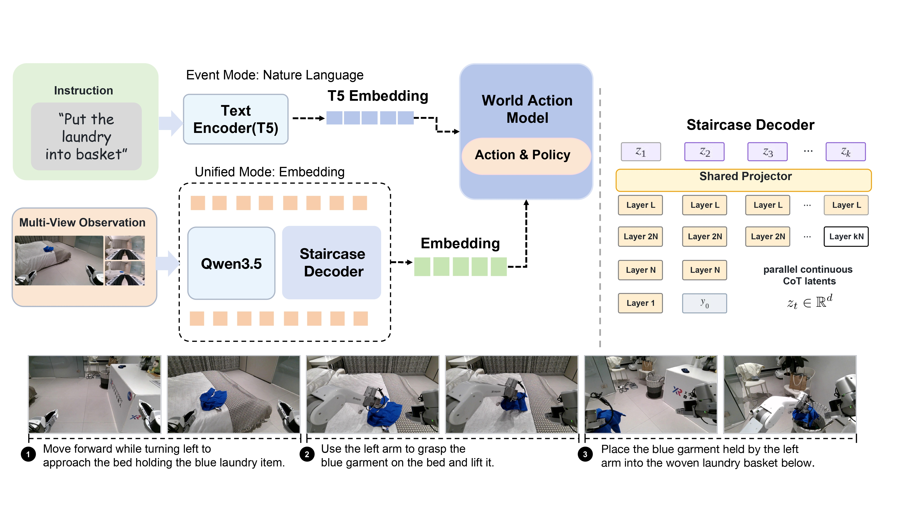

01 / DATA
Hierarchical supervision
Task, Subtask, Action, and Segment annotations preserve the temporal structure of demonstrations.
Event-structured task planning for embodied intelligence
A planning front end for long-horizon robot manipulation. X-Planner turns observations, instructions, and execution history into action-grounded events for a downstream world-action model.

The public code release keeps the planning contract explicit, reproducible, and independent from private training data and deployment paths.
Task, Subtask, Action, and Segment annotations preserve the temporal structure of demonstrations.
Initial, ongoing, and terminal states are materialized as deterministic compact JSON.
Event states provide a readable interface while latent planning supports Staircase Decoding.
The V5.3 snapshot couples the event planner to a downstream world-action model and reports Task Progress on reasoning and generalization suites. These are the report's historical results, not a new evaluation of X-Planner-9B-0916.
| Suite | Task Progress |
|---|---|
| Reasoning manipulation | 71.60 |
| Generalization | 53.75 |
Download the inference model and benchmark on Hugging Face, and explore the implementation and report on GitHub.
Source code, training and inference entry points, tests, and release documentation.
BF16 inference weights, tokenizer, and processor, with download and Transformers loading instructions.
1,500 episodes and 3,490 videos with episode metadata and playable multi-view Dataset Preview.
X-Planner: Event-Structured Task Planning for Embodied Intelligence.
Installation, data contracts, and evaluation entry points.
Please cite the accompanying technical report when using X-Planner.
@article{xplanner2026event,
title = {X-Planner: Event-Structured Task Planning for Embodied Intelligence},
author = {{X Square Robot Team}},
year = {2026},
note = {Technical report}
}